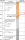
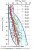
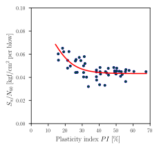

For the data attached, calculate \(N\), \(N_{60}\), and \(N_{1,60}\). The automatic hammer was used.

Sample calculation:
Factors affecting SPT results
Cause
Estimated % by Which Cause Can Change N
Effective Stresses at bottom of borehole (sands)
+50% - +100%
Dynamic energy reaching sampler (all soils)
+10% - +100%
Sampler design
-10% -30%
Penetration interval
-15% - +30%
What is the hydromechanicalbehavior of soils during SPT?
The hydromechanical behavior of soils during SPT is function of: (i) soil type, (ii) saturation, (iii) strain-rate. However, it is worth noting that this behavior is extremely complex to analyze.
In general, for sands transient drainage is expected, while for clays undrained behavior is expected.
Dilation is expected for low confinement and large strain rates.
Sensitive clays might show reduced \(N\) values due high remolding processes or strain softening.
Variation in SPT results

The repeatability of in-situ tests is key for the reliability of the results.
SPT results are more reliable when using automatic hammer.
SPT results are more reliable when appropriately correcting for energy efficiency.
Repeatable results could be obtained as long as same SPT setup is used.
Adequate use of SPT correlations
SPT results are used to obtain soil parameters of interest via correlations. As explained earlier, the reliability of SPT results is constrained. Caution must be exercised when using correlations.
Before using a correlation, determine:
how was it constructed.
What types of soils were used in the database?
What SPT setup was used in experiments?
What is the typical range of \(N\) (among others) in the database?
After using correlations validate your results. Are you obtaining parameter values as expected?
Correlations of SPT with \(D_r\)
Table reproduced from Duncan et al. (2014).
Soil Type
Relative Density (\(D_r\))
Parameters and Units
Reference
Normally consolidated sands
\(D_r = \sqrt{\frac{N}{1.7(10 + \sigma'_v)}}\)
\(\sigma'_v\) = effective vertical stress in psi
Gibbs and Holtz (1957)
Normally consolidated silica sands
\(D_r = \sqrt{\frac{N}{0.234\sigma'_v + 16}}\)
\(N\) = SPT blow count in blows/ft
\(\sigma'_v\) = effective vertical stress in kPa
Meyerhof (1956)
Coarse sands
\(D_r = \sqrt{\frac{N}{0.773\sigma'_v + 22}}\) for \(\sigma'_v < 75\) kPa
\(D_r = \sqrt{\frac{N}{0.193\sigma'_v + 66}}\) for \(\sigma'_v \geq 75\) kPa
\(\sigma'_v\) = effective vertical stress in kPa
\(N_{60}\) = blow count corrected to 60% of the maximum theoretical energy
\(a = 0.3\) (mean value), \(b = 30\) (mean value)
If sand is overconsolidated, increase \(b\) by a factor of \(C_f\).
\(K_0\) = ratio of effective horizontal stress to vertical stress for overconsolidated sand
\(K_{0-nc}\) = ratio of effective horizontal to vertical stress for normally consolidated sand (\(\approx 1 - \sin \phi\)).
Skempton (1986)
Equations using \(N\) used the uncorrected blow count. However, hammers delivering 60 percent of the theoretical energy have been the most commonly used, thus, it seems more appropriate to use \(N_{60}\) instead.
Correlations with friction angles
Table reproduced from Duncan et al. (2014)
Soil Type
\(\phi\) (deg)
Reference
Angular and well-graded soil particles
\(\phi = \sqrt{12N} + 25\)
Dunham (1954)
Round and well-graded or angular and uniformly graded soil particles
\(\phi = \sqrt{12N_1} + 20\)
\(N_1 = N\) normalized to 1 tsf of overburden pressure using the Liao and Whitman (1986) equation.
It is recommended to use \(N_{1,60}\) with this correlation.
Hatanaka and Uchida (1996)
Correlations with \(S_u\)
Many authors argue SPT values in clay are of little value unless the clay is relatively stiff and insensitive.
Reproduced from Terzaghi and Peck (1967)
Soil consistency
SPT \(N\)
\(S_u\) (psf)
Very soft
< 2
< 250
Soft
2 - 4
250 - 500
Medium
4 - 8
500 - 1000
Stiff
8 - 15
1000 - 2000
Very stiff
15 - 30
2000 - 4000
Hard
>30
>4000

Take away
SPT is a simple and inexpensive test to obtain in-situ soil properties.
Caution must be exercised when using correlations to obtain soil parameters.
Repeatability of SPT results is key for the reliability of the results.
SPT results are affected by many factors such as overburden stress, energy delivered, test setup, among others.